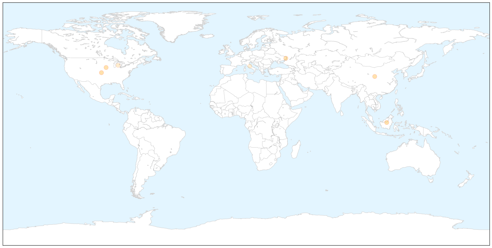
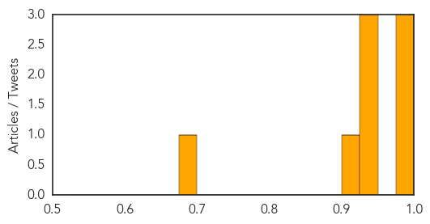

Influenza
30-Day Web Trend
0 alerts, 0 warnings

30-Day Twitter Trend
0 alerts, 0 warnings

Article Locations

X

Article Confidences

Top Articles:
- 0.975
- CDC Hypes Flu Dangers
- 0.961
- As deadly flu bug ebbs, milder strain spreads
- 0.960
- Flu shot protects against new H7N9 strain: study – BorneoPost Online
- 0.955
- Flu shot protects against new strain H7N9
- 0.955
- Flu shot protects against new H7N9 strain: study
- 0.928
- WHO increases humanitarian efforts as crisis in Ukraine continues - Ukraine
- 0.580
- Tamiflu Improves Flu Symptoms, Decreases Respiratory Infection Risk
- 0.515
- Ban on import of live poultry from Italy still in effect - Emirates 24
Top Tweets:
-
No tweets found for Feb 17, 2015
Cholera
30-Day Web Trend
0 alerts, 0 warnings

30-Day Twitter Trend
0 alerts, 0 warnings

Article Locations

Article Confidences
Top Articles:
- 0.991
- Comment: Heed council's cholera warnings
- 0.988
- Kenya : For cholera, prevention always better than cure
- 0.980
- UN Official Advises Sustained Fight Against Cholera in Haiti
- 0.943
- Italian cemetery could preserve cholera DNA
- 0.936
- Scientists Seek Cholera DNA in Tuscan Cemetery
- 0.926
- Italian Cemetery Could Preserve Cholera DNA
- 0.907
- Italian Cemetery Could Preserve Cholera DNA
- 0.690
- Danao City Cholera outbreak, Health exec confirms water contamination
Top Tweets:
-
No tweets found for Feb 17, 2015